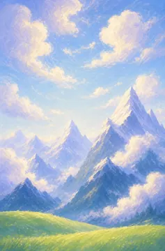
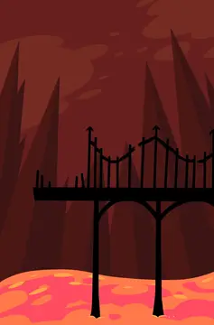

Ball is God?! หมุนหอคอย กลายเป็นแรงกระแทก
เกมอาร์เคดแนวดิ่งสุดฮาร์ดคอร์ที่ลากแนวนอนหมุนหอคอยไปรอบ ๆ Espa ที่ตกลงมา ข้ามการลงจอดอย่างปลอดภัย ชาร์จคอมโบต่อย และฝ่าเข้าไปในโลกลึกลับที่การปะทะที่ไม่ระวังตัวจะทำให้การวิ่งสิ้นสุดลง
อยู่ระหว่างการผลิต: ฉากสถานที่สิบฉาก บอส บทสนทนาแตกกิ่ง และเส้นทางกรรมที่เปลี่ยนกติกาการเล่น
หมุนลากหอคอยไปรอบๆ Espa
ความเสี่ยงข้ามการลงจอดอย่างปลอดภัยสามครั้ง
ทุบเลยทะลุแพลตฟอร์ม
ภายในบิลด์ปัจจุบัน
กรรมเปลี่ยนแปลงมากกว่าบทสนทนา
เส้นทางกรรมฝ่ายสว่าง กลาง และมืดเปลี่ยนพฤติกรรมของโล่ สัญญาณเตือน ความดุของศัตรู และเฟสของบอส เนื้อเรื่องจึงเปลี่ยนวิธีเล่นของคุณ
สถานะบิลด์ อยู่ระหว่างการผลิตโลกบทสนทนาทั้งสิบโลก
พื้นหลังฉากสนทนาของทั้งสิบโลก เรียงตามลำดับการดิ่งลงจาก Ena ถึง Deka


UI การผลิตปัจจุบัน
หน้าเลือกด่าน บทสนทนา และหน้าจอผลลัพธ์ในบิลด์ปัจจุบัน
นี่คือลำดับขั้นตอนปัจจุบันตามที่คุณจะเจอ คือหน้าเลือกด่าน บทสนทนา ทางเลือกสำคัญ แล้วจึงถึงหน้าชัยชนะหรือหน้าจอพ่ายแพ้แยกต่างหาก ภาพทั้งหมดด้านล่างใช้งานศิลป์จากโปรเจกต์ Unity ตัวจริงที่ใช้ผลิต
เส้นทางสวรรค์เลือกระดับที่สร้างขึ้นในสิบบทจาก 100 ระดับ
เมนูการผลิตจะแมปสถานที่ 10 แห่งใน 100 ระดับบท และเปิดโดยตรงในการวิ่งที่เลือก

 201
201บทสนทนาเกิดขึ้นภายในสถานที่นั้น
ภาพตัวละคร งานศิลป์ของสถานที่ และป้ายชื่อผู้พูดอยู่ในกรอบแนวตั้งเดียวกัน


Shash
ดำเนินการต่อ - แต่อย่าคิดว่ามันจะง่าย Trials กำลังรอคุณอยู่ ซึ่งจะทำให้ทุกสิ่งก่อนหน้านี้ดูเหมือนเป็นเรื่องเล็ก
04 / ตัวเลือกเหตุการณ์สำคัญ
คำตอบกลายเป็นส่วนหนึ่งของการสืบเชื้อสาย
ที่ระดับท้องถิ่น 90 และ 100 คณะผู้พิจารณาเฉพาะจะขอการตัดสินใจสำรองหรือฆ่าก่อนที่บทสนทนาจะยุติการดำเนินเรื่อง

ไว้ชีวิต
ฆ่า
05 / เมนูผลลัพธ์
ชัยชนะดำเนินต่อไป ความพ่ายแพ้กลับไปสู่ความท้าทายเดียวกัน
โครงสร้างปัจจุบันมีสถานะผลลัพธ์สองสถานะแยกกัน: PanelWin เสนอการเล่นซ้ำและระดับถัดไป ในขณะที่ PanelOver จะเก็บการดำเนินการเล่นซ้ำไว้อย่างไม่ผิดเพี้ยน
ชัยชนะ · PanelWin
ผ่านการดิ่งลงแล้ว
 เล่นซ้ำ
ถัดไป
เล่นซ้ำ
ถัดไป
เล่นซ้ำ
ถัดไป
ตัวละครในบทสนทนา
เจอหน้ากันตอนขาลง
อักขระทั้งหมด 25 ตัวที่มีคู่แนวตั้งแบบเปิดและปิดที่ถูกต้องจะรวมอยู่ด้านล่าง โฮเวอร์หรือโฟกัสการ์ดเพื่อสลับการแสดงออก


ภาพรวมเกม
Ball is God?! คือเกมอาร์เคดสุดฮาร์ดคอร์ว่าด้วยการดิ่งผ่านหอคอยที่หมุนอยู่
แนวคิด
นำทาง Espa ลงจากหอคอยศักดิ์สิทธิ์ ความผิดพลาดครั้งเดียวก็จบรอบได้ และทางเลือกสำคัญของคุณเปลี่ยนวิธีที่โลกดำเนินไป
บิลด์ปัจจุบัน
ฉากสถานที่สิบฉาก, การสร้างหอคอยตามขั้นตอน, การทุบคอมโบ, การปัดโล่, การกำหนดค่าบอส, บทสนทนาที่แตกแขนง, เมนูการผลิต และภาพบุคคลที่พร้อมสำหรับการแสดงออก
กลุ่มเป้าหมาย
ผู้เล่นที่ชอบเกมอาร์เคดมือถือสายโหด จังหวะแบบเสี่ยงเพื่อรางวัล และบอส พร้อมเนื้อเรื่องให้ติดตาม
สถานะ
อยู่ระหว่างการผลิต งานล่าสุดครอบคลุมระบบรันไทม์ งานศิลป์ของโลก การทดสอบ และประสบการณ์การเล่นบนโทรศัพท์
คุณสมบัติ
สิ่งที่คุณทำใน Ball is God?!
ดิ่งลงด้วยการลากเพื่อหมุน
การลากแนวนอนจะหมุนหอคอยไปรอบ ๆ Espa ที่ตกลงมาโดยอัตโนมัติ จัดเรียงช่องว่าง อันตราย และแพลตฟอร์มที่ปลอดภัย
ความกดดันอาร์เคดแบบฮาร์ดคอร์
การโดนโจมตีโดยไม่ได้ป้องกันเพียงครั้งเดียวก็จบรอบ คุณจึงต้องอ่านหอคอยและจับจังหวะทุกการเคลื่อนไหว
บอสและโลกในตำนาน
ฉากสถานที่สิบฉาก แต่ละฉากมีบอสของตัวเอง พาเนื้อเรื่องจากโลกหนึ่งไปสู่อีกโลกหนึ่ง
ทางเลือกที่เปลี่ยนกติกา
บทสนทนาการเปลี่ยนแปลงความเมตตา พลัง และกรรม กฎโล่ การรุกรานของศัตรู โทรเลข และช่วงบอส
ลูปการเล่นเกม
วิธีเล่น Ball is God?!
- ขั้นตอนที่ 01อ่านเส้นทางดิ่งลง
สแกนแพลตฟอร์ม ช่องว่าง และอันตรายถัดไป แล้วมองหาจังหวะที่ปลอดภัยขณะตกลงไป
- ขั้นตอนที่ 02หมุนหอคอย
การลากในแนวนอนเปลี่ยนโลกรอบๆ Espa จัดแนวแพลตฟอร์มที่ปลอดภัยหรือช่องว่างโดยเจตนา
- ขั้นตอนที่ 03เสี่ยงและทุบ
ข้ามสามแพลตฟอร์มเพื่อชาร์จคอมโบต่อย จากนั้นบุกทะลวงสิ่งก่อสร้างในขณะที่เกราะป้องกันความผิดพลาดร้ายแรงครั้งหนึ่ง
- ขั้นตอนที่ 04เลือกผลที่ตามมา
ความเมตตาและพลังกำหนดกรรม บทสนทนา และกฎการเล่นเกมที่ส่งผลต่อศัตรูและผู้บังคับบัญชา
เรื่องราว/โลก
หอคอยในตำนานที่ทุกทางเลือกของคุณตามคุณลงไป
Ball is God?! เริ่มต้นจากความหลงใหลในวัยเด็กด้วยเกมอาร์เคดแนวดิ่งบนมือถือ: การอ่านช่องว่าง การตอบสนองอย่างรวดเร็ว และการเอาชีวิตรอดโดยสัญชาตญาณ
รูปแบบนี้รองรับได้มากกว่านั้น ทั้งบอส ตัวละครที่มีบุคลิก เนื้อเรื่อง และความตึงเครียดทางศีลธรรม โปรเจกต์ปัจจุบันตาม Espa ผ่านฉากสถานที่สิบฉากและตัวละครแปลก ๆ มากมาย พร้อมทางเลือกที่เปลี่ยนทั้งเนื้อเรื่องและการเล่น
เป้าหมายจึงกลายเป็นอาร์เคดดิ่งลงแนวตั้งที่เรียบง่าย พร้อมแรงกดดันแบบการสู้บอสและผลของการตัดสินใจแบบ RPG ที่ขับเคลื่อนด้วยเนื้อเรื่อง
- วิสัยทัศน์
- อาร์เคดหอคอยหมุนพร้อมเรื่องราวในตำนาน
- ขอบเขตโลกปัจจุบัน
- สิบสถานที่และการตั้งค่าบอส
- ขั้นเนื้อเรื่อง
- ร่างเรื่องราวแบบยาวให้สมบูรณ์
- สถานะการผลิต
- อยู่ระหว่างการผลิต
ภาพรวมโดยย่อ
ควบคุมด้วยการลากง่าย ๆ พร้อมเนื้อเรื่องที่เปลี่ยนกติกา
ระบบลากเพื่อหมุนตอบสนองทันที ส่วนที่เหลือมาจากโลกในตำนาน บอส และทางเลือกที่เปลี่ยนการเล่น
บิลด์ปัจจุบันรวมการสร้างหอคอยแบบกำหนดแน่นอน การสแมชแบบเสี่ยงเพื่อรางวัล การแพ้ในหมัดเดียว บอส บทสนทนาแตกกิ่ง และกรรมที่เปลี่ยนการเล่นไว้แล้ว
- ประเภท
- เกมอาร์เคดแนวดิ่งที่ขับเคลื่อนด้วยเรื่องราว
- เป้าหมายแพลตฟอร์ม
- iOS / Android
- รูปแบบรอบการเล่น
- รอบการเล่นเร็วที่ใช้ทักษะ
- สตูดิโอ
- WillowinWorlds
ดาวน์โหลดไฟล์สื่อ
Ball is God?! เนื้อหาสื่อและผู้สร้าง
ไฟล์พรีวิว WebP สำหรับการนำเสนอข่าว การพิจารณาของผู้จัดพิมพ์ และอ้างอิงหน้าสโตร์ ไฟล์ต้นฉบับความละเอียดเต็มมีให้เมื่อขอ
แบรนด์และตัวละคร
ไอคอนเกมพร้อมตัวละครปัจจุบันทั้ง 25 ตัวที่มีภาพบทสนทนาการผลิตที่สมบูรณ์ ชื่อตรงกับคีย์การแปล Unity
Espaภาพตัวละครของผู้เล่น
Revlaภาพบทสนทนาการผลิต
Shashภาพบทสนทนาการผลิต
Shushภาพบทสนทนาการผลิต
Shishภาพบทสนทนาการผลิต
Gigoภาพบทสนทนาการผลิต
Gogaภาพบทสนทนาการผลิต
Gigaภาพบทสนทนาการผลิต
Askoldภาพบทสนทนาการผลิต
Mirasภาพบทสนทนาการผลิต
Hihภาพบทสนทนาการผลิต
Hehภาพบทสนทนาการผลิต
Hahภาพบทสนทนาการผลิต
Musyaภาพบทสนทนาการผลิต
Dusyaภาพบทสนทนาการผลิต
Susyaภาพบทสนทนาการผลิต
Vladusภาพบทสนทนาการผลิต
Frishaภาพบทสนทนาการผลิต
Lurenภาพบทสนทนาการผลิต
Kurenภาพบทสนทนาการผลิต
Don Yagonภาพบทสนทนาการผลิต
Luryaภาพบทสนทนาการผลิต
Khleyaภาพบทสนทนาการผลิต
Varonภาพบทสนทนาการผลิต
Whiteภาพบทสนทนาการผลิต
พื้นหลังเมนู
อาร์ตเวิร์คการผลิตปัจจุบันที่ใช้โดยระบบการเลือกระดับสวรรค์
 เมนูสวรรค์
เมนูสวรรค์โลกดิ่งลงแนวตั้ง
ชุดพื้นหลังตำแหน่งปัจจุบันทั้ง 10 ชุด เรียงจาก Ena ถึง Deka
01 · โลกท้องฟ้าพื้นหลังการดิ่งลงแนวตั้งของ Ena
 02 · โลกอวกาศพื้นหลังการดิ่งลงแนวตั้งของ Dyo
02 · โลกอวกาศพื้นหลังการดิ่งลงแนวตั้งของ Dyo
 03 · โลกแห่งพายุพื้นหลังการดิ่งลงแนวตั้งของ Tria
03 · โลกแห่งพายุพื้นหลังการดิ่งลงแนวตั้งของ Tria
 05 · โลกภูเขาไฟพื้นหลัง Pente; เคลื่อนไหวในเกม
05 · โลกภูเขาไฟพื้นหลัง Pente; เคลื่อนไหวในเกม
 06 · โลกมหาสมุทรพื้นหลังการดิ่งลงแนวตั้งของ Eksi
06 · โลกมหาสมุทรพื้นหลังการดิ่งลงแนวตั้งของ Eksi
 07 · โลกทะเลทรายพื้นหลังการดิ่งลงแนวตั้งของ Epta
07 · โลกทะเลทรายพื้นหลังการดิ่งลงแนวตั้งของ Epta
 08 · โลกของป่าไม้พื้นหลังการดิ่งลงแนวตั้งของ Ohto
08 · โลกของป่าไม้พื้นหลังการดิ่งลงแนวตั้งของ Ohto
 09 · โลกถ้ำพื้นหลังการดิ่งลงแนวตั้งของ Ennea
09 · โลกถ้ำพื้นหลังการดิ่งลงแนวตั้งของ Ennea

 02 · โลกอวกาศพื้นหลังการดิ่งลงแนวตั้งของ Dyo
02 · โลกอวกาศพื้นหลังการดิ่งลงแนวตั้งของ Dyo
 03 · โลกแห่งพายุพื้นหลังการดิ่งลงแนวตั้งของ Tria
03 · โลกแห่งพายุพื้นหลังการดิ่งลงแนวตั้งของ Tria


04 · โลกหิมะพื้นหลังการดิ่งลงแนวตั้งของ Tessera 05 · โลกภูเขาไฟพื้นหลัง Pente; เคลื่อนไหวในเกม
05 · โลกภูเขาไฟพื้นหลัง Pente; เคลื่อนไหวในเกม
 06 · โลกมหาสมุทรพื้นหลังการดิ่งลงแนวตั้งของ Eksi
06 · โลกมหาสมุทรพื้นหลังการดิ่งลงแนวตั้งของ Eksi
 07 · โลกทะเลทรายพื้นหลังการดิ่งลงแนวตั้งของ Epta
07 · โลกทะเลทรายพื้นหลังการดิ่งลงแนวตั้งของ Epta
 08 · โลกของป่าไม้พื้นหลังการดิ่งลงแนวตั้งของ Ohto
08 · โลกของป่าไม้พื้นหลังการดิ่งลงแนวตั้งของ Ohto
 09 · โลกถ้ำพื้นหลังการดิ่งลงแนวตั้งของ Ennea
09 · โลกถ้ำพื้นหลังการดิ่งลงแนวตั้งของ Ennea


10 · โลกนรกพื้นหลังการดิ่งลงแนวตั้งของ Dekaพื้นหลังอาร์เคดเนื้อเรื่อง
ชุดสถานที่สนทนาที่สมบูรณ์: Hall of Light พร้อมพื้นหลังสำหรับทั้งสิบโลก
 00 · ห้องโถงแห่งแสงสว่างพื้นหลังบทสนทนาเปิดเรื่อง
00 · ห้องโถงแห่งแสงสว่างพื้นหลังบทสนทนาเปิดเรื่อง
 01 · บทสนทนาบนท้องฟ้าพื้นหลังเรื่องราว Ena
01 · บทสนทนาบนท้องฟ้าพื้นหลังเรื่องราว Ena
 02 · บทสนทนาในอวกาศพื้นหลังเรื่องราว Dyo
02 · บทสนทนาในอวกาศพื้นหลังเรื่องราว Dyo
 03 · บทสนทนาของพายุพื้นหลังเรื่องราว Tria
03 · บทสนทนาของพายุพื้นหลังเรื่องราว Tria
 04 · บทสนทนาหิมะพื้นหลังเรื่องราว Tessera
04 · บทสนทนาหิมะพื้นหลังเรื่องราว Tessera
 05 · บทสนทนาภูเขาไฟพื้นหลังเรื่องราว Pente
05 · บทสนทนาภูเขาไฟพื้นหลังเรื่องราว Pente
 06 · บทสนทนาในมหาสมุทรพื้นหลังเรื่องราว Eksi
06 · บทสนทนาในมหาสมุทรพื้นหลังเรื่องราว Eksi
 07 · บทสนทนาในทะเลทรายพื้นหลังเรื่องราว Epta
07 · บทสนทนาในทะเลทรายพื้นหลังเรื่องราว Epta
 08 · บทสนทนาในป่าพื้นหลังเรื่องราว Ohto
08 · บทสนทนาในป่าพื้นหลังเรื่องราว Ohto
 09 · บทสนทนาในถ้ำพื้นหลังเรื่องราว Ennea
09 · บทสนทนาในถ้ำพื้นหลังเรื่องราว Ennea
 10 · บทสนทนานรกพื้นหลังเรื่องราว Deka
10 · บทสนทนานรกพื้นหลังเรื่องราว Deka
คำถามที่พบบ่อยเกี่ยวกับ Ball is God?!
คำถามที่พบบ่อยเกี่ยวกับ Ball is God?!
Ball is God?! เป็นเกมประเภทไหน
เกมอาร์เคดดิ่งลงแนวตั้งสุดฮาร์ดคอร์ คุณหมุนหอคอยรอบ Espa ที่กำลังตก ข้ามจุดลงที่ปลอดภัยเพื่อชาร์จสแมช และฝ่าโลกในตำนาน
เล่น Ball is God?! อย่างไร
ลากในแนวนอนเพื่อหมุนหอคอย ข้ามสามแพลตฟอร์มเพื่อชาร์จการโจมตี และปัดในแนวตั้งเมื่อโล่คูลดาวน์ต้องดูดซับการโจมตีที่รุนแรง
Ball is God?! ออกแล้วหรือยัง
ยังไม่ออก เกมอยู่ระหว่างการผลิตทั้งด้านระบบรันไทม์ งานศิลป์ของโลก เนื้อหาเนื้อเรื่อง และการทดสอบ ยังไม่มีกำหนดวันวางจำหน่ายสาธารณะ แพลตฟอร์มเป้าหมายคือ iOS และ Android
อะไรทำให้ Ball is God?! แตกต่าง
ผสมผสานแรงกดดันแบบอาร์เคดที่เสี่ยงเพื่อรางวัลเข้ากับสิบฉาก และกรรมที่เปลี่ยนบทสนทนา ศัตรู สัญญาณเตือนการโจมตี โล่ และบอส
ใครเป็นผู้สร้าง Ball is God?!
WillowinWorlds สตูดิโออิสระที่ทำเกมไขปริศนาและอาร์เคดบนมือถือ
ใช้ไฟล์สื่อของ Ball is God?! ได้ไหม
ได้ สำหรับสื่อ การพิจารณาของผู้จัดพิมพ์ และอ้างอิงสโตร์ ไฟล์ต้นฉบับจะเป็นส่วนตัวเว้นแต่คุณขอจากเรา
บันทึกการพัฒนา Ball is God?!
มีการเปลี่ยนแปลงอะไรและเมื่อใด
- พื้นผิวโลกและการตรวจสอบอันตราย
การนำเสนอตัวละคร การสร้างแบบกำหนดแน่นอน และอันตรายจากหนาม ได้รับการปรับทั้งด้านภาพและการตรวจสอบพร้อมกัน
- กรกฎาคม 2026ปรับ UI การผลิตและตัวละคร
หน้าเลือกด่าน ปุ่มควบคุมการกระทำที่ใช้ร่วมกัน กรอบบทสนทนาแนวตั้ง และสีหน้าตัวละครแบบจับคู่ พร้อมใช้งานแล้ว
- กุมภาพันธ์ 2026ทบทวนขอบเขตโครงการ
ทีมงานผ่านการรวมเรื่องราวหลักและตรวจสอบสเกลทั้งหมดของโปรเจ็กต์: โลกทั้งสิบ ทางเลือกทางศีลธรรม บอส และตอนจบที่หลากหลาย
- เมษายน-พฤษภาคม 2025การเขียนเรื่องราวและความสามารถใหม่
เรื่องราวทั้งหมดถูกเขียนใหม่ ความสามารถของตัวละครได้รับการปรับปรุง และผลกระทบทางศีลธรรมก็ชัดเจนขึ้น
- สิงหาคม 2024ทิศทางของเรื่องราวเริ่มต้นขึ้น
ทีมตัดสินใจว่า Ball is God?! ควรเป็นมากกว่าอาร์เคดดิ่งลงแบบง่าย ๆ จึงเพิ่มเนื้อเรื่องในตำนานและแนวคิดการเลือกทางศีลธรรม
- กรกฎาคม 2024แนวคิดดั้งเดิม
โปรเจกต์นี้เริ่มจากไอเดียเกมแรกของสตูดิโอ คือเกมอาร์เคดแนวตั้งจังหวะเร็วว่าด้วยการดิ่งผ่านหอคอยศักดิ์สิทธิ์
- บิลด์ปัจจุบันอาร์เคดและเนื้อเรื่องในบิลด์เดียว
การดิ่งลงหอคอยหมุน คอมโบสแมช โล่ปัด บอส บทสนทนา และกรรม ทำงานร่วมกันได้ในบิลด์เดียวแล้ว